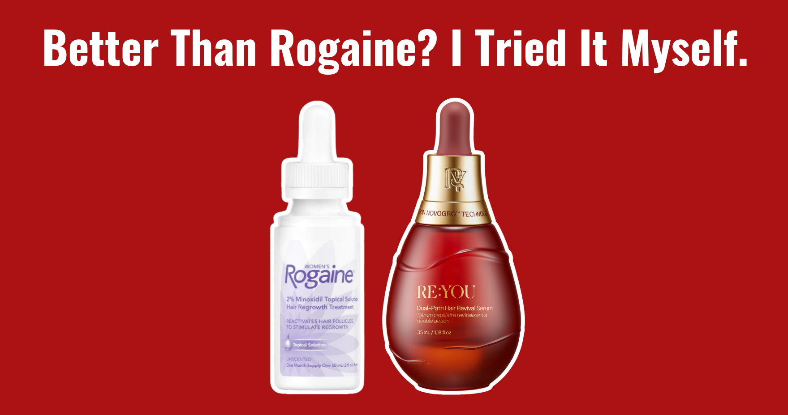
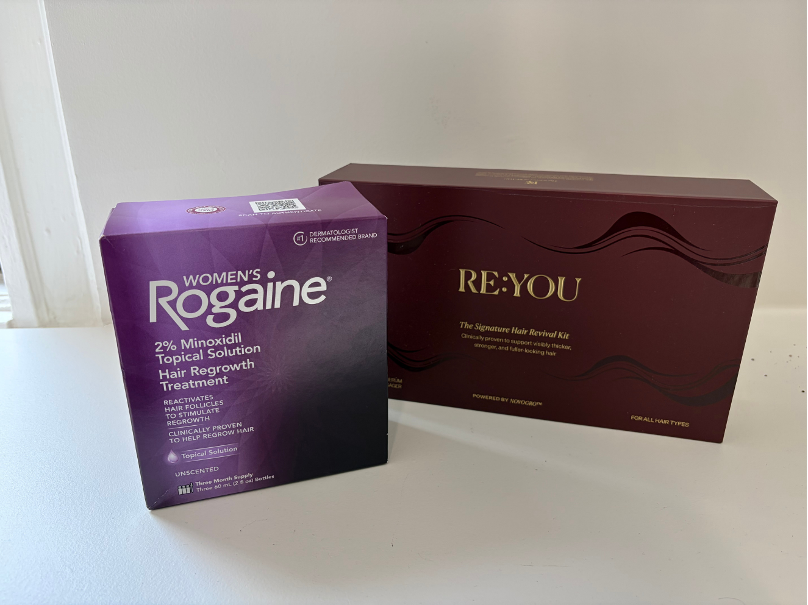
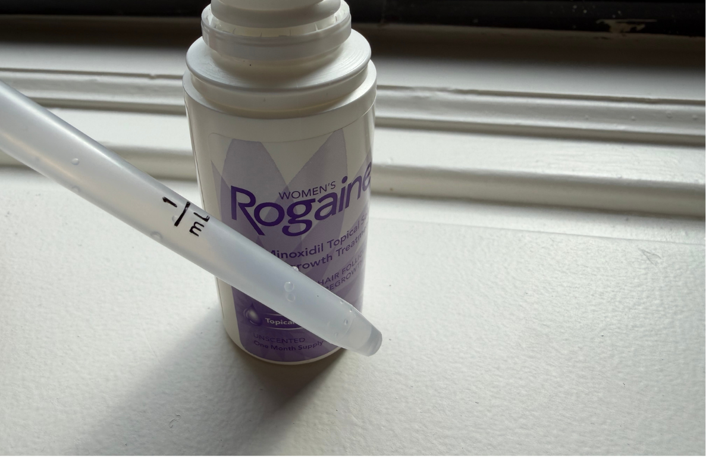
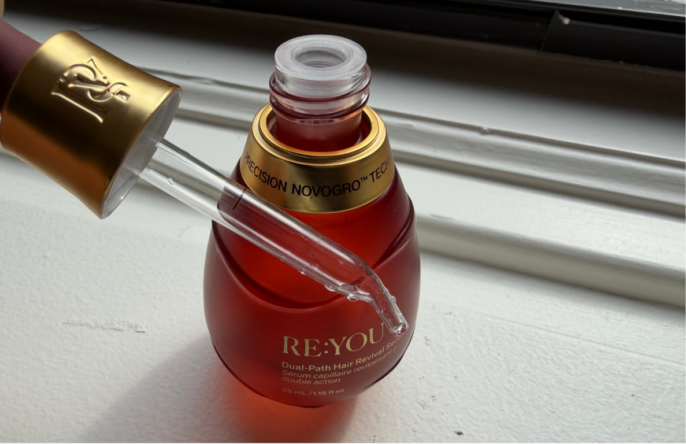
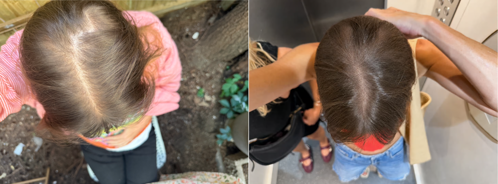

Your new holy grail product for hair thinning, or another growth serum that doesn't live up to its big promises? A new scalp serum challenged the gold-standard for hair loss, minoxidil, in a head-to-head study and apparently outperformed it.
RE:YOU claims that its newly discovered trio of proprietary molecules, which they call NOVOGRO™, demonstrated results in 90 days and 1.7x more improvement in thinning than minoxidil.
Being the skeptics that we are here at TBB, I had to see for myself.
I tested Rogaine Women's 2% Minoxidil Solution and the RE:YOU Dual-Path Hair Revival Serum for 90 days each, evaluating both the daily application experience and final results.

My Hair Loss Concerns
I've been experiencing hair thinning for about 2 years. Specifically, a gradual widening of my part that extends back to the crown, and some thin spots on the sides of my head that show when I wear a ponytail.
It affects my confidence and I've tried countless new serums: drugstore, high-end, all-natural treatments, castor oil, caffeine serums, rosemary... you name it.
Disclaimer: I tried a minoxidil 5% solution about a year ago, but experienced irritation and dryness on my scalp, so I stopped after about 6 weeks before any results. This time, I used the 2% solution to compare with RE:YOU, and tolerated it better.
Minoxidil Is Back
I used to think Rogaine was only for male pattern baldness and hair thinning due to age. Unglamorous to use, and a bit old fashioned. But in the past couple of years, I've seen minoxidil make a huge comeback on TikTok and Reels with people of all ages and hair concerns.
Why? It just works. It's been around since the 80s, and after years of trying new drug-free serums from beauty brands with no success, I guess we're all going back to minoxidil?
However, minoxidil has side effects and the frequent application leaves an annoying residue. Not to mention the 'dread shed' period, where hair initially sheds more and makes you want to quit.
“Dread shed”: Minoxidil commonly makes hair loss worse at the beginning of treatment. For both topical and oral minoxidil, the temporary shedding starts around 2 to 4 weeks after initial treatment, and lasts for 3 to 6 weeks.
This happens because minoxidil stimulates the hair growth cycle, involving shedding old hair follicles stuck in a 'sleeping' stage. It may be temporary, but it's huge pain to push through.
The Benchmark: Minoxidil
Here's an ingredient breakdown of Rogaine Women's 2% Minoxidil Solution:
Active ingredient/s: 2% minoxidil only
Usage: 2 applications to scalp per day
Price: ~$0.62/day
I love the short ingredient list. Simple and nothing unnecessary. But, given the strength of minoxidil, maybe something to offset the drying effect or lighten the formula would have been nice.

RE:YOU's Formula
Active ingredient/s: 3 NOVOGRO™ molecules, Capixyl™ (hair support peptide), Aloe Vera, Glutathione, Pea Sprout, Centella Asiatica, Saw Palmetto, Ashwagandha Root, Biotin, Apigenin
Usage: 1 application to scalp per day
Price: ~$2.76/day
This ingredient list was longer and a bit more confusing, but the combination of disruptive new actives and the natural botanicals was refreshing. There is alcohol which scares me, but emollients are included too.

Comparing the Science
So RE:YOU, a drug-free and hormone-free product, being better than minoxidil sounds too good to be true. While minoxidil relies on increasing blood flow to the hair follicles, RE:YOU uses 3 new molecules called NOVOGRO™ to support follicle cells as well as the environment around them. Have questions about the testing behind it? I did too.
First question: Is this an actual clinical trial or one of those "98% agreed" surveys dressed up to sound official? I've seen that trick a thousand times.
It's a real one, which you can read about here. Randomized, double-blind and head-to-head against minoxidil instead of placebo.
Second question: How exactly did they test this?
The study used multiple methods including machine imaging, expert clinical assessment, standardized comb testing and patient-reported outcomes. However, they are still working on new data on longer term results, which I'll keep an eye out for.
Which Was More Pleasant To Use?
Both serums required some discipline to work into my routine every day. However, I preferred the experience of using RE:YOU including the packaging and texture of the formula.
The precise applicator and lightweight serum texture worked well with my styling and hair wash schedule. Rogaine left a residue on my scalp, which is my main gripe with hair serums. My hair is fine and easily looks greasy and flat—if you have thicker hair you might not notice it as much!
- Twice-daily application
- Slightly sticky texture that felt heavy on the scalp
- Made my clean hair look dirty when worn down
- Alcohol smell (which faded eventually after application)
- Started to feel scalp dryness after 2 weeks of use
- Angled dropper made application more precise
- Felt weightless on scalp and dried down quickly
- Did not make my roots look greasy
- Worked well with my usual styling products (volumizing mousse)
What I Actually Saw At 90 Days
This is only one person's results, and hair is stubborn and slow no matter what you use.
With minoxidil, the shedding phase happened right on schedule around week three, which was stressful even though I expected it. 90 days later, less was falling out but I wasn't seeing much regrowth. It's known that minoxidil shows full results at 1+ years.
With RE:YOU, the change was easier to point to by the end. After a month, I started noticing new baby hairs along my part and hairline. At 90 days, now the part and crown look noticeably fuller. It was a subtle transformation, but it's making me hopeful for what my hair could look like in 3 months!

The Verdict
We've all been burned by big promises made by beauty brands. The marketing speak makes you believe a product will change your life, only for it to end up in the pile of others that disappointed.
So going in, I didn't get my hopes up about RE:YOU. But in my own 90-day test, I saw more improvement than with Rogaine. Even better, it happened with no initial shedding phase!
Even so, I don't think that makes minoxidil a bad choice. It's cheap, it's proven, and it works for those who react well to it. But if the twice-daily routine or initial shedding phase has kept you from sticking with minoxidil, RE:YOU Dual-Path Hair Revival Serum is the first alternative I've tried that is convincing enough to make the switch.